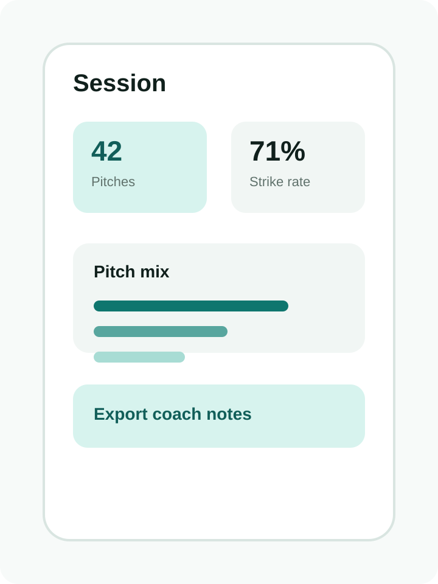
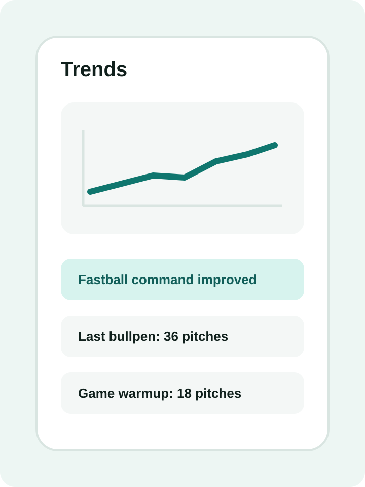

Session tracking
Capture key bullpen or game-prep details in a structured record.
PitchTrace
PitchTrace helps organize pitching sessions, trends, and notes so progress is easier to understand over time.



Features
Capture key bullpen or game-prep details in a structured record.
Review velocity, command, pitch mix, and development notes over time.
Keep observations clear so athletes and coaches can make better use of each session.